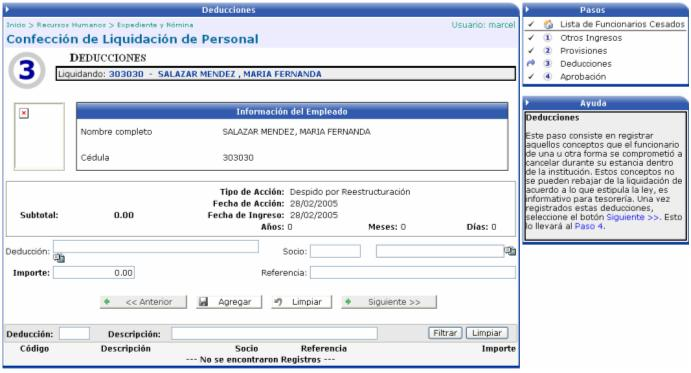

En esta opción se calcula la liquidación de un empleado, calculando sus vacaciones, su aguinaldo, su preaviso y su cesantía. Para ello es importante mencionar que dichos conceptos se deben de crear en la sección de Conceptos de Pago, en el módulo de Parámetros RH; cada uno con su respectiva fórmula de cálculo.
Por otro lado se debe de crear uno o varios tipos de acción según corresponda (dependiendo de lo que se vaya a pagar en la liquidación) a los cuales se le deben de asociar los conceptos creados anteriormente. Además mediante un parámetro en el tipo de acción se puede definir si se pagan los días de salario que están pendientes de cancelar, en el pago de la nómina o en la liquidación. Por ejemplo si una planilla va del 1 al 15 y una persona renuncia el 10, esos 10 días de salario se pueden pagar en la nómina o en la liquidación. Para esto se tendría que crear dos tipos de acción: una que pague esos días en la planilla y otra que los pague en la liquidación.
Una vez parametrizados los conceptos y los tipos de acciones, se procede a realizar la acción de liquidación al empleado, la misma debe de calcular los conceptos que se le asociaron, los cuales se mostrarán cuando se confeccione y se salve dicha acción.
Confección de Liquidación de Personal:
En esta opción del sistema, se procederá a realizar la liquidación de los empleados que han sido cesados. En la siguiente pantalla se muestra la lista de dichos empleados:
Se procede a seleccionar a un empleado para comenzar con el proceso de la confección de la liquidación:
Paso 1 Otros Ingresos:
En este primer paso se podrán asociar, rubros adicionales de tipo importe, a la liquidación. Así como también todas las incidencias (horas extra, comisiones, etc.) que no le fueron pagadas al funcionario.
Además se van a mostrar automáticamente los conceptos que fueron calculados en la acción de personal, más un detalle de la cantidad de años, meses y días que tenia el empleado de laborar al momento del cese. Toda esta información no se puede modificar

Una vez agregadas las incidencias se presiona el botónpara continuar con el paso#2:
Paso 2 Provisiones:
En este paso se debe se considerar que conceptos de provisiones se deben de cancelar. Un ejemplo puede ser el aporte patronal que brinda la empresa y esta se lo da a la asociación para que esta sea quien maneje dicho aporte

Una vez agregadas las provisiones se presiona el botón para continuar con el paso#3:
Paso 3 Deducciones:
En este paso se cargan automáticamente todas las deducciones que tiene asociado el empleado y que de una u otra forma se comprometió a cancelar durante su estancia dentro de la empresa. Se cargarán aquellas deducciones cuyo estado sea “Controla Saldo” y que estén activas al momento del cese. Estas deducciones no se pueden rebajar de la liquidación de acuerdo a lo que estipula la ley, solamente es informativo para tesorería y son ingresadas al sistema con el fin de distribuir el monto de la liquidación en tantos socios de negocios tenga. El socio de negocio se usa para agrupar el total de las deducciones ya que puede haber varias deducciones que pertenecen a un mismo socio de negocio.
Por ejemplo el total de la liquidación es por 1.000.000 de colones y la persona le debe a la asociación 400.000 colones y a la empresa 250.000. Por lo que saldrían varios cheques uno por 400.000 colones otro por 250.000 colones y otro por 350.000 colones, todos a nombre del empleado y es decisión de él, si los endosa o no para cancelar las deudas.

Una vez agregadas las provisiones se presiona el botón para continuar con el último paso:
Paso 4 Aprobación:
Este último paso consiste en una verificación final de cada uno de los rubros calculados y también en dar por finalizado el proceso de ingresos de rubros a la liquidación. Además se muestra el monto total de la liquidación, el cual consiste en la sumatoria de los siguientes rubros: preaviso, vacaciones, aguinaldo, cesantía, más los ingresos adicionales y provisiones.
Además al estar aprobada la liquidación se podrá imprimir la boleta de liquidación laboral, esto se podrá realizar en la siguiente opción.